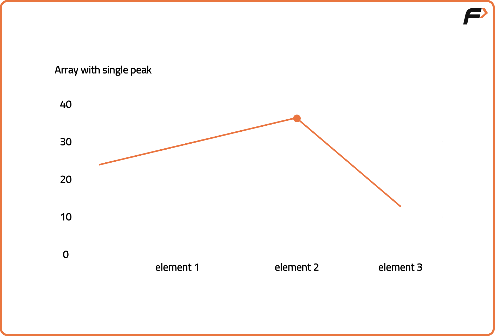
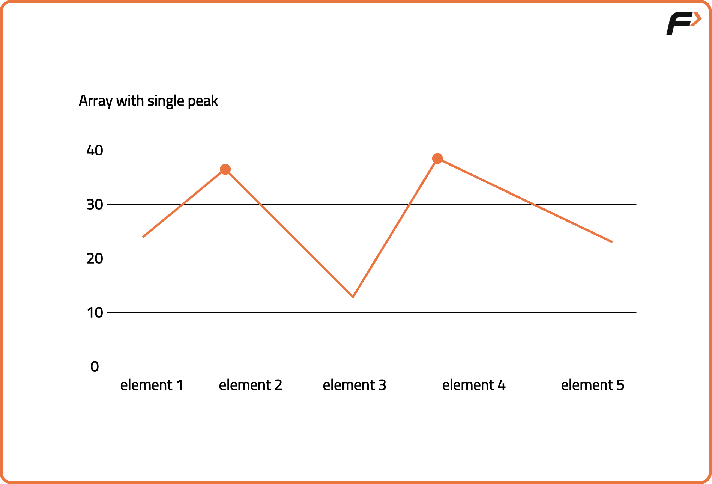
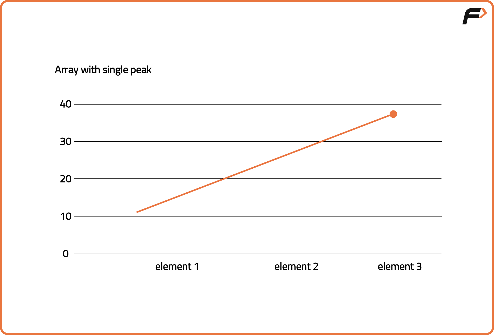
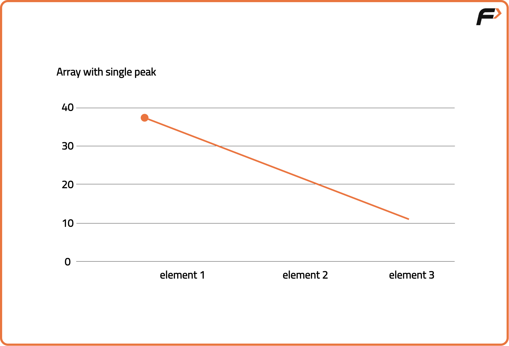
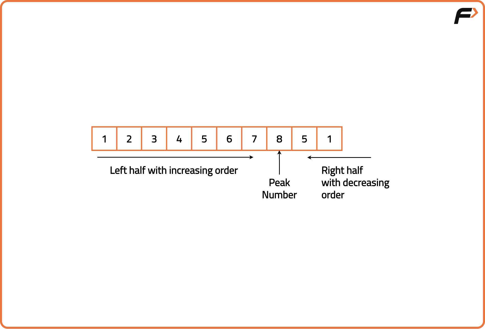
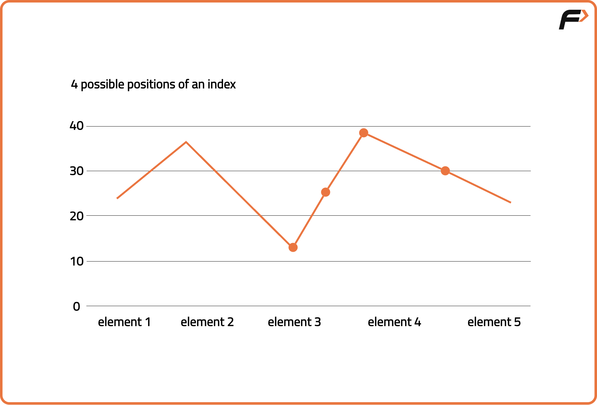

Archived from https://takeuforward.org/data-structure/peak-element-in-array/
Problem Statement: Given an array of length N, peak element is defined as the element greater than both of its neighbors. Formally, if arr[i] is the peak element, arr[i - 1] < arr[i] and arr[i + 1] < arr[i]. Find the index(0-based) of a peak element in the array. If there are multiple peak numbers, return the index of any peak number.
Examples
Input: arr[] = {1,2,3,4,5,6,7,8,5,1}Output: 7Explanation: There is only 1 peak element, 8, that is at index 7.Input: arr[] = {1,2,1,3,5,6,4} Output: 1 Explanation : There are 2 peak numbers that are at indices 1 and 5. We can return any of them.
Disclaimer:
It's highly recommend trying to
solve it before looking at the solution.
Brute Force Approach
Algorithm
A peak element in an array refers to the element that is greater than both of its neighbors. Basically, if arr[i] is the peak element, arr[i] > arr[i-1] and arr[i] > arr[i+1].
Now if we want to visualize an array with the peak elements from the graphical point of view, there can be 4 cases:
Case 1: An array with a single peak number:

Case 2: An array with multiple peaks:

Case 3: Last element as peak element:

Case 4: First element as peak element:

The brute force approach to find peak element is to traverse the entire array and compare the current element with both of its neighbours. If it is greater than both of its neighbours we can simply return it as our peak element.
For the elements at first and last index, since both the neighbours are not available, we can just check their only neighbour element and return if its a peak element or not.
Code
#include <bits/stdc++.h>
using namespace std;
class Solution {
public:
// Function to find a peak element in the array
int findPeakElement(vector<int>& nums) {
int n = nums.size();
// Traverse the array
for (int i = 0; i < n; i++) {
// Check left neighbor if exists
bool left = (i == 0) || (nums[i] >= nums[i - 1]);
// Check right neighbor if exists
bool right = (i == n - 1) || (nums[i] >= nums[i + 1]);
// If both sides are valid, return index
if (left && right) return i;
}
// In case no peak found (shouldn't happen)
return -1;
}
};
// Driver
int main() {
Solution sol;
vector<int> nums = {1, 3, 20, 4, 1, 0};
int index = sol.findPeakElement(nums);
cout << "Peak at index: " << index << " with value: " << nums[index] << endl;
return 0;
}
class Solution {
// Function to find a peak element in the array
public int findPeakElement(int[] nums) {
int n = nums.length;
// Traverse the array
for (int i = 0; i < n; i++) {
// Check left neighbor if exists
boolean left = (i == 0) || (nums[i] >= nums[i - 1]);
// Check right neighbor if exists
boolean right = (i == n - 1) || (nums[i] >= nums[i + 1]);
// If both conditions are true
if (left && right) return i;
}
// In case no peak found
return -1;
}
}
// Driver
public class Main {
public static void main(String[] args) {
Solution sol = new Solution();
int[] nums = {1, 3, 20, 4, 1, 0};
int index = sol.findPeakElement(nums);
System.out.println("Peak at index: " + index + " with value: " + nums[index]);
}
}
class Solution:
# Function to find a peak element in the array
def findPeakElement(self, nums):
n = len(nums)
# Traverse the array
for i in range(n):
# Check left neighbor if exists
left = (i == 0) or (nums[i] >= nums[i - 1])
# Check right neighbor if exists
right = (i == n - 1) or (nums[i] >= nums[i + 1])
# If both conditions are true
if left and right:
return i
# In case no peak found
return -1
# Driver
sol = Solution()
nums = [1, 3, 20, 4, 1, 0]
index = sol.findPeakElement(nums)
print(f"Peak at index: {index} with value: {nums[index]}")
class Solution {
// Function to find a peak element in the array
findPeakElement(nums) {
const n = nums.length;
// Traverse the array
for (let i = 0; i < n; i++) {
// Check left neighbor if exists
const left = (i === 0) || (nums[i] >= nums[i - 1]);
// Check right neighbor if exists
const right = (i === n - 1) || (nums[i] >= nums[i + 1]);
// If both conditions are satisfied
if (left && right) return i;
}
// In case no peak found
return -1;
}
}
// Driver
const sol = new Solution();
const nums = [1, 3, 20, 4, 1, 0];
const index = sol.findPeakElement(nums);
console.log("Peak at index:", index, "with value:", nums[index]);
Complexity Analysis.
Time Complexity: O(N), we traverse the entire array once to find peak element. Space Complexity: O(1), constant additional space is used.
Optimal Approach
Algorithm
To optimize our solution even further, we can use binary search algorithm. The primary objective of the Binary Search algorithm is to efficiently determine the appropriate half to eliminate, thereby reducing the search space by half. It does this by determining a specific condition that ensures that the target is not present in that half.
To know how to eliminate the half efficiently, we can clearly notice a striking distinction between the left and right halves of the peak element in the array. The left half of the peak element has an increasing order whereas the right half of the peak element has a decreasing order.

Thus we know that if current element is greater than its left neighbour, we are in the left half and if our current element is greater than its right neighbour then we are in the right half. If we know the half that we are in currently, we can eliminate it to find our peak element.

In addition to the two cases above, we can have two more cases. One, where the current element itself is the peak or where the current element is a common point where a decreasing sequence ends and an increasing sequence begins. In either cases we can eliminate any of the halves, as the other half will also contain a peak element.
Initialize the search space to the full range of the array.
Find the middle index of the current search range.
Check if the middle element is greater than its right neighbor.
If yes, then a peak must exist in the left half (including mid), so shrink the right bound.
Otherwise, the peak must lie in the right half (excluding mid), so shift the left bound.
Continue until the search space converges to a single element.
This final position is the index of a peak element.
Code
#include <bits/stdc++.h>
using namespace std;
class Solution {
public:
// Function to find a peak element using binary search
int findPeakElement(vector<int>& nums) {
// Set left and right bounds
int low = 0, high = nums.size() - 1;
// Binary search loop
while (low < high) {
// Find mid point
int mid = (low + high) / 2;
// If mid element is greater than next
if (nums[mid] > nums[mid + 1]) {
// Move to left half
high = mid;
} else {
// Move to right half
low = mid + 1;
}
}
// Return peak index
return low;
}
};
int main() {
// Input array
vector<int> nums = {1, 2, 1, 3, 5, 6, 4};
// Create object
Solution obj;
// Output result
cout << obj.findPeakElement(nums) << endl;
return 0;
}
class Solution {
// Function to find a peak element using binary search
public int findPeakElement(int[] nums) {
// Set left and right bounds
int low = 0, high = nums.length - 1;
// Binary search loop
while (low < high) {
// Find mid point
int mid = (low + high) / 2;
// If mid element is greater than next
if (nums[mid] > nums[mid + 1]) {
// Move to left half
high = mid;
} else {
// Move to right half
low = mid + 1;
}
}
// Return peak index
return low;
}
}
public class Main {
public static void main(String[] args) {
// Input array
int[] nums = {1, 2, 1, 3, 5, 6, 4};
// Create object
Solution obj = new Solution();
// Output result
System.out.println(obj.findPeakElement(nums));
}
}
class Solution:
# Function to find a peak element using binary search
def findPeakElement(self, nums):
# Set left and right bounds
low, high = 0, len(nums) - 1
# Binary search loop
while low < high:
# Find mid point
mid = (low + high) // 2
# If mid element is greater than next
if nums[mid] > nums[mid + 1]:
# Move to left half
high = mid
else:
# Move to right half
low = mid + 1
# Return peak index
return low
# Input array
nums = [1, 2, 1, 3, 5, 6, 4]
# Create object
obj = Solution()
# Output result
print(obj.findPeakElement(nums))
class Solution {
// Function to find a peak element using binary search
findPeakElement(nums) {
// Set left and right bounds
let low = 0, high = nums.length - 1;
// Binary search loop
while (low < high) {
// Find mid point
let mid = Math.floor((low + high) / 2);
// If mid element is greater than next
if (nums[mid] > nums[mid + 1]) {
// Move to left half
high = mid;
} else {
// Move to right half
low = mid + 1;
}
}
// Return peak index
return low;
}
}
// Input array
let nums = [1, 2, 1, 3, 5, 6, 4];
// Create object
let obj = new Solution();
// Output result
console.log(obj.findPeakElement(nums));
Complexity Analysis.
Time Complexity: O(log N), we reduce the search space to half at every step using binary search. Space Complexity: O(1), constant additional space is used.